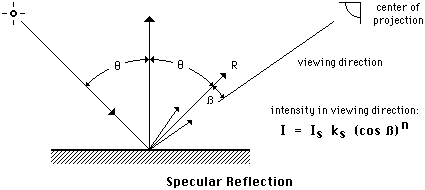
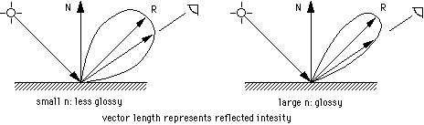

Previous
-- Next
REFLECTION MODELS
- Symbols
Is = intensity of ray of incident (from light source)
I = intensity of ray of reflection (towards viewer)
N = surface normal at point of incident
theta = angle between incident ray and surface normal N

Note: All intensities are 'light intensities' defined by RGB triples
- Diffuse Reflection
- typical for rough or dull looking surfaces
- a perfect diffuse surface scatters an incoming light ray equally in all directions
- reflected intensity I is a function of theta (Lambert's law)
- reflection coefficient kd is a material property (range 0-1)

- Mirror Surface
- a perfect mirror surface reflects light ray in only one direction (R)
- ray of incident and ray of reflection have the same angle theta with normal N and lie in the same plane
- reflection ray R can only be seen when viewed from that direction
- intensity of incident and reflection ray are equal

- Specular Reflection
- shiny surfaces are not perfectly mirror-like
- reflected light can be seen from directions close to R
(displacement angle beta between R and viewing direction)
- results are 'highlights' or 'specular reflections' indicating a somewhat glossy surface
- specular reflection coefficient ks (material property) models the reduced intensity in the direction of R

- the rapid falloff in reflected intensity is modeled by the specular reflection exponent n
(range from 1 for gentle falloff to several hundreds for sharp falloff)

Previous
-- Next